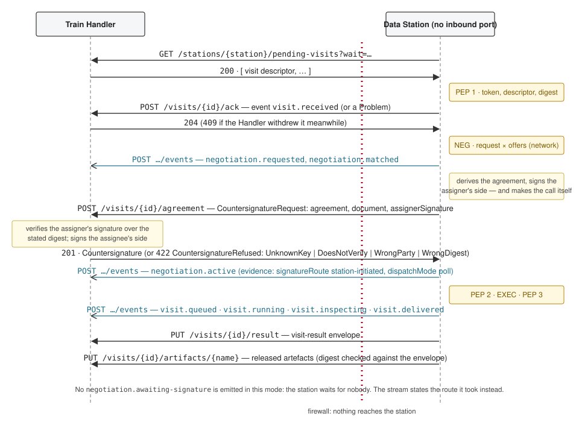
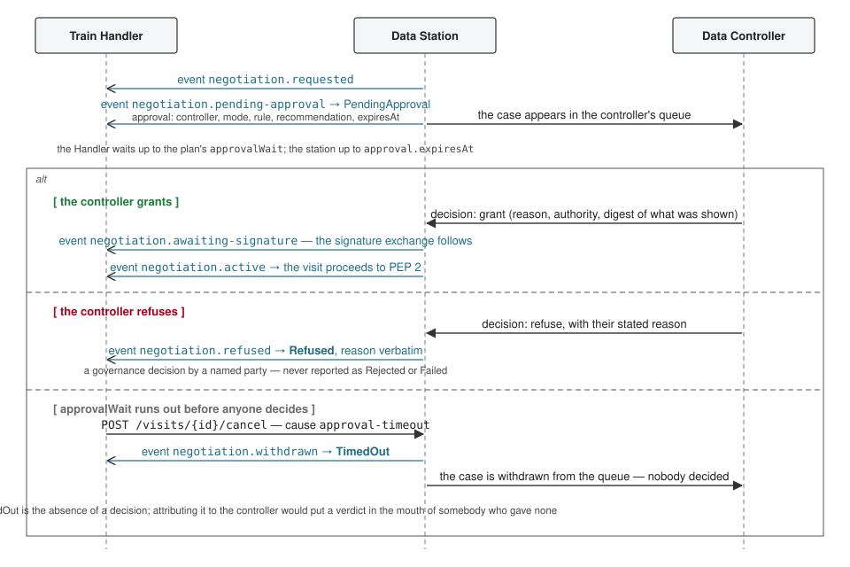
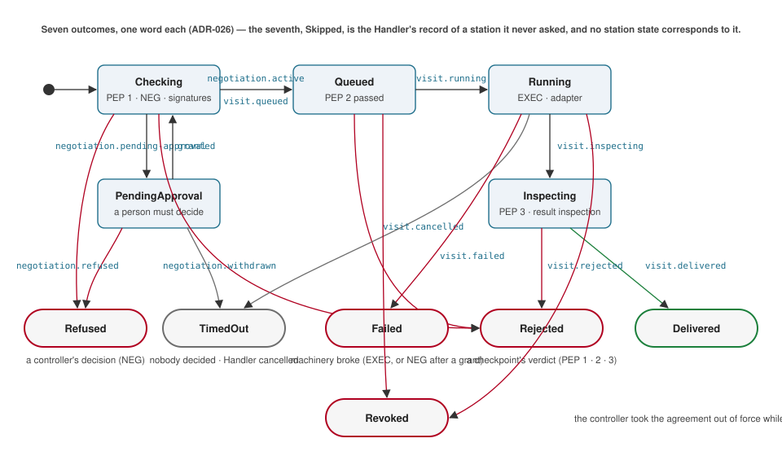

1. Introduction
This section is non-normative.
In the FAIR Data Train the computation travels to the data. A train — a query, an API call, a script or a container — is sent to a Data Station that hosts the data, runs there under terms negotiated on arrival, and only what passes the station’s inspection leaves. The Train Handler is the consumer’s agent that sends the train and collects what comes back; the station is where the data controller’s conditions are enforced.
The Visit Protocol is the data plane of the FDT ecosystem: the conversation between a Handler and a station for one visit — one train, at one station, under one agreement (ADR-014, ADR-027 [FDT-ADR]). Every multi-station itinerary a Handler can run — a single visit, fan-out, a sequence, a discovery chain, iterative rounds, two-phase selection, composition — decomposes into visits, which is why this is deliberately the only interface a station has to implement to take part in any of them. The Handler owns the run; the station owns the visit.
The protocol is defined by its artefacts as much as by this text. Its three message types are JSON Schemas, its two interfaces are OpenAPI documents, its RDF payloads are validated by SHACL shapes, and the examples in this document are the published fixtures every implementation is tested against — not documents typed into prose. Appendix B: Normative artefacts names them, pinned to a commit.
1.1. Scope
This section is non-normative.
This specification covers, for one visit: dispatch in two directions (§ 6 Dispatch); what a station checks when a train arrives; negotiation on arrival, the derivation of the agreement and the signatures of both parties (§ 7 Negotiation on arrival); execution and the inspection of the result (§ 8 Execution and inspection); the hand-over of state between visits (§ 9 Onward state and hand-over); how every decision is reported (§ 10 Reporting); how a visit ends (§ 11 Outcomes, cancellation, retries, revocation); the messages (§ 12 Messages) and the interfaces (§ 13 Station API, § 14 Handler API — the station-facing surface); and the security model (§ 15 Security).
Three things are not in this protocol and live in their own contracts: the station’s metadata and catalogue ([FDT-ARCHITECTURE] §3.1.1, built on [FDP] and [VOCAB-DCAT-3]); the controller’s actions over their own data — authoring conditions, approving, revoking, suspending —which reach a station through its console or an Individual Gateway; and the catalogues of the registry and the Train Depot, from which a train is dereferenced by IRI.
1.2. Reading this document
This section is non-normative.
Decisions behind the protocol are recorded as Architecture Decision Records [FDT-ADR] and are cited as ADR-nnn where the reasoning may matter to an implementer. Questions the protocol leaves open are listed in § 17 Open points with their register identifiers (Qnn); each has a stated default that implementations follow until it is decided.
Member names in message tables are written as camelCase JSON keys. Where a value is an IRI, it
is a string in the JSON and an IRI in the vocabulary the schema maps it to.
2. Conformance classes
Three conformance classes are defined. The requirements are stated in the body of this document with the key words of [RFC2119] and collected here.
- Push-dispatch station
-
A Data Station that accepts inbound connections. It MUST implement the Station API (§ 13 Station API) — at least
/,POST /visits,GET /visits/{visitId},GET /visits/{visitId}/events,GET /visits/{visitId}/result,POST /visits/{visitId}/cancelandPOST /visits/{visitId}/agreement/signature; MUST validate descriptors and embedded ODRL requests against the schemas and shapes of Appendix B: Normative artefacts; MUST verify the payload digest against the train’s depot offer before anything runs; MUST emit every decision as an event with a justification; MUST sign the assigner’s side of every agreement it concludes and MUST run nothing under an agreement that does not carry the assignee’s signature; MUST NOT let record-level content into an envelope; and, when it receives a hand-over, MUST check the lineage rule of § 9.2 What arrives before fetching anything. - Poll-dispatch station
-
A Data Station that accepts no inbound connection. It MUST implement the poll half of the Handler API as a client (§ 14 Handler API — the station-facing surface) —
GET /stations/{stationId}/pending-visits,POST /visits/{visitId}/ack,POST /visits/{visitId}/events,PUT /visits/{visitId}/resultandPOST /visits/{visitId}/agreement— and otherwise meets every requirement of a push-dispatch station. It MUST report by callback, that being the only direction it can open. - Train Handler (conformance class)
-
A Handler MUST mint the visit IRI of every visit and use it as the idempotency key; MUST embed an ODRL request valid against
fdts:RequestShapeor an existing agreement IRI; MUST honour the plan’sapprovalWaitand failure policy; MUST verify the assigner’s signature over the stated digest before signing the assignee’s side, and MUST refuse to sign a document the station never signed; MUST de-duplicate events onidand order them onsequence; MUST namehandOver.fromVisitin the same descriptor’sprecededBywhenever it carries a hand-over; MUST assemble the run record and completeness statement from envelopes and events only; and MUST hold non-personal, aggregate results only (ADR-015).
3. Terminology
- run
-
One execution of a plan — a train, its parameter values, an itinerary and a request template — by a Handler. A run is decomposed into visits.
- hop, phase
-
A visit’s position in its itinerary: the hop counts outward from the run’s entry stations; the phase is the order of the itinerary phase it belongs to. Both are integers from 1.
- attempt
-
A retry re-dispatches the same visit IRI with
attemptincremented, under the same agreement. Attempts of one visit share its identity and its agreement. - agreement
-
The
odrl:Agreement[ODRL-MODEL] a station derives from the controller’s offer and the train’s request for one visit, pinned by digest and signed by both parties. One per visit (ADR-014). - checkpoint
-
One of the points at which a station decides: PEP 1 (arrival), NEG (negotiation), PEP 2 (before execution), EXEC (execution), PEP 3 (result inspection) and OBL (post-execution obligations).
- dispatch mode
-
How a visit reaches a station: push — the Handler posts it — or poll — the station fetches it from the Handler (ADR-004).
- reporting mode
-
How a station’s events and envelope reach the Handler: callback — the station posts them to a per-visit URL — or poll — the Handler reads them from the station. Note that the two senses of poll are different parties reading in different directions; § 7.4 Signatures of both parties depends on keeping them apart.
- onward state
-
What leaves a station other than the result delivered to the Handler: state of class
AggregateorPseudonymcarried to another station, directly in a choreographed train or through a linkage station.RecordLevelnever leaves a station. - hand-over
-
State produced by an earlier visit of the same run and named, by location and digest, as the input of a later one.
- outcome
-
The one word a visit ends in: Delivered, Refused, Rejected, TimedOut, Failed, Revoked, or — recorded by the Handler alone — Skipped (§ 11 Outcomes, cancellation, retries, revocation).
- canonical form
-
Of a graph G: its [RDF-CANON] (URDNA2015) canonical form, serialised as N-Quads, the lines sorted, joined with
\n, with a trailing\n, encoded UTF-8. Every digest a party signs or pins is"sha256:"followed by the lowercase hex SHA-256 of a canonical form.
4. Parties and identifiers
| Party | Role in the protocol | Identified by |
|---|---|---|
| Train Handler | Client of the Station API; server of the Handler API. Mints the visit IRI, embeds the request, signs the assignee’s side, applies the failure policy. | Its IRI (consumer.handler); its own credential at the station (§ 15 Security); the consumer’s legal party as consumer.party.
|
| Data Station | Server of the Station API; client of the Handler API. Checks the arrival, negotiates, signs the assigner’s side, enforces the checkpoints, emits events, returns the envelope. | Its IRI (self-description); the identity providers it trusts per network. |
| Train | The subject of the visit: an executable asset in a Train Depot’s catalogue, with its creator’s offer and its payload digest (ADR-020). | train.iri; its payload by sha256: digest.
|
| Linkage / alignment station | An ordinary station whose mechanism is identifier translation or vocabulary alignment; visited with this protocol. | As any station. |
Identifiers are IRIs. The visit IRI is the idempotency key of the whole exchange: a repeated
push, a retry under the same agreement, and every event and envelope refer to it. A station MUST
treat a repeated POST /visits with the same visit and attempt as a replay and answer with the
visit’s current status. Event IRIs are minted by the station and MUST be unique; sequence MUST
be monotonic per visit and attempt.
A station advertises that it speaks this protocol in its self-description: its dispatch endpoint
is a dcat:DataService whose dct:conformsTo is the protocol identifier
https://w3id.org/fdt/visit-protocol/v1, and whose dcat:endpointURL is the base URL of the
Station API.
5. Overview of a visit
This section is non-normative; the sections it points at are normative.

-
Dispatch. The Handler composes a visit descriptor and pushes it to the station, or a poll-dispatch station fetches it from the Handler (§ 6 Dispatch).
-
PEP 1. The station verifies the caller’s credential against the identity providers it trusts for the visit’s network, validates the descriptor against its schema and the embedded ODRL request against
fdts:RequestShape, checks that the train’s payload digest equals the one in the train’s depot offer, and checks that it supports the train’s mechanism. A failure rejects the visit; otherwise it emitsvisit.received. -
Negotiation. The station matches the request against the controller’s offer for the visit’s network and the owner’s policy. The outcome is a match, a case put to a person, or a refusal — which is the controller’s decision, never the station’s (§ 7 Negotiation on arrival).
-
Signatures. The station derives the agreement, signs the assigner’s side and asks for the assignee’s; the Handler verifies the terms and that signature and signs the assignee’s side with the train owner’s key. Only then does the agreement become active, and only then does anything run (§ 7.4 Signatures of both parties).
-
PEP 2 and execution. The station checks that the agreement is active and about this visit and that its quotas allow the run, queues it, and runs the payload through the adapter for the train’s mechanism.
-
PEP 3. The station validates the result against the train’s declared output schema, checks every duty of the agreement on it, and decides what leaves and where (§ 8 Execution and inspection). A failure rejects the result; nothing leaves.
-
Delivery. The visit-result envelope is pushed to the Handler’s callback URL or fetched by the Handler, and the visit ends in one of the outcomes of § 11 Outcomes, cancellation, retries, revocation.

6. Dispatch
6.1. Push dispatch
Under push dispatch the Handler POSTs the visit descriptor to the station’s dispatch endpoint,
read from the station’s self-description. The station MUST answer 202 Accepted with a
Location header naming the visit’s status URL and a VisitStatus body when the visit was
taken; 200 with the current status on an idempotent replay; 400 with a Problem when the
visit is rejected at PEP 1; 401 when the credential is missing or untrusted; 403 with a
Problem when the visit is refused at negotiation; 409 when the same visit IRI is known with a
different, still-running attempt; and 415 when the station does not support the train’s
mechanism.
6.2. Poll dispatch
A station that cannot accept inbound connections MUST instead call
GET /stations/{stationId}/pending-visits on the Handler, which returns the descriptors waiting
for it and MAY long-poll for up to wait seconds. For each descriptor it takes, the station MUST
POST /visits/{visitId}/ack with its first event — visit.received — or with a Problem if the
visit is rejected at PEP 1. An acknowledgement answered 409 means the Handler withdrew the visit
meanwhile, and the station MUST NOT start it. Beyond the gateway, processing is identical to push
dispatch (ADR-004).
A station advertises its dispatch mode or modes in its self-description; the Handler chooses per station.
6.3. Reporting modes
The descriptor’s reporting.mode selects how the station’s events and envelope reach the Handler.
Under callback the station POSTs events to {callbackUrl}/events and PUTs the envelope to
{callbackUrl}/result, presenting the descriptor’s callbackToken as a bearer token. Under
poll the Handler reads GET /visits/{visitId}/events?after=n — or subscribes with
Accept: text/event-stream — and fetches GET /visits/{visitId}/result. A poll-dispatch station
MUST report by callback.
6.4. Idempotency, attempts and withdrawal
A Handler retrying a Failed visit MUST re-dispatch the same visit IRI with attempt incremented
by one and negotiation.agreement set to the existing agreement; the station MUST reuse that
agreement rather than negotiate anew. The Handler withdraws a visit with
POST /visits/{visitId}/cancel, stating a reason and a cause from approval-timeout,
fail-run, stopped-by-person, deadline or replanned; a queued or pending visit ends at once
and a running one stops at its next checkpoint (§ 11.1 Cancellation).
7. Negotiation on arrival
7.1. Request or agreement
The descriptor’s negotiation member carries either an odrl:Request — JSON-LD, validated at
PEP 1 against fdts:RequestShape — or the IRI of an existing active agreement (rounds of an
iterative pattern, retries). With an agreement IRI the station MUST verify that the agreement is
active, that its target and assignee match the visit, and that it was concluded at this station;
otherwise the visit is Rejected at PEP 2.
With a request, the station MUST match it against the controller’s offers for the visit’s
network (ADR-017) and the station owner’s policy, and MUST emit negotiation.requested first.
The request names the network under fdt-p:underNetwork, the train under fdt-p:train, the
target dataset or part, the assignee and the actions it asks for with their constraints, of which
a purpose is required. The descriptor’s consumer.party and the request’s odrl:assignee MUST
name the same party; a station MUST reject at PEP 1 a descriptor in which they differ, since the
agreement binds the request’s assignee while every record a controller is shown names the
descriptor’s consumer.
7.2. Matched, pending, refused
Matching has three outcomes.
- Matched
-
The offer and the request are satisfiable and the station may conclude. It emits
negotiation.matchedwith a justification and proceeds to derive and sign the agreement.negotiation.matchedMUST be emitted only when the two are satisfiable: the state means exactly that, and maps to the Dataspace Protocol’s OFFERED or AGREED, neither of which describes a request nothing can satisfy. - Pending approval
-
A person must decide. A station emits
negotiation.pending-approvalcarrying anapprovalobject that names the controller who must decide, themodethat says why a person is deciding, therulethat imposed it, the station’srecommendation, the eligibility facts it could not establish, and its ownexpiresAt. The modes areHumanRequiredByRegulation(the network’s regime bars automated decisions),HumanByControllerPreference(the offer asks for a person),HumanByStationPolicy(the operator configured one) andHumanByInconclusiveEvaluation(the controller’s conditions did not answer — the request asks for something no permission addresses, or a fact could not be established; ADR-050). Where a machine may not grant, it may not refuse either (ADR-032): a visit whose evaluation recommends refusal in a network that bars automated decisions goes fromnegotiation.requestedstraight tonegotiation.pending-approval, without anegotiation.matched, and therecommendationis what tells the two apart. A recommendation is not an outcome. - Refused
-
The controller’s standing conditions declined the request — conclusively, under a rule of the offer — or a person did. The station emits
negotiation.refusedwith the statedreasonand thejustification, and the visit’s outcome is Refused. This is a governance decision by a named party and is never reported in any other word (§ 11 Outcomes, cancellation, retries, revocation).

While a visit is pending, the Handler MUST wait up to the plan’s approvalWait and then either
withdraw the visit (POST /visits/{visitId}/cancel, cause approval-timeout) or keep waiting as
its failure policy says. The station MAY apply its own timeout (approval.expiresAt). A visit
withdrawn because nobody decided ends TimedOut, and MUST NOT be reported as Refused or
Rejected: nobody decided anything, and that is the fact to report.
7.3. Derivation of the agreement
An agreement that merely has the right shape is not an agreement anyone can audit. A station MUST
derive the agreement from the offer O (restricted to the visit’s network), the request R and
the visit V by the following rule, which fdt-commons executes over every published agreement
and which a station’s own agreements are held to:
-
Actions. The agreement grants exactly
actions(R) ∩ actions(O). If no action survives there is no agreement and the outcome is Refused, naming the rule. -
Constraints. Every
odrl:LeftOperandof the FDT profile has afdt-p:constraintRole: Eligibility constraints (legal basis, consumer type, network, jurisdiction, train, mechanism) are established once at negotiation and become evidence, never terms; Usage constraints (purpose, onward state class, k-anonymity, retention, validity window) become terms re-checked at PEP 2 and PEP 3. For each granted action and each usage operand O's matching rule constrains, the agreement carries what was asked, bounded by what was offered: R's constraint if O admits it, otherwise O's. Every usage constraint of O's matching rule MUST appear, and every usage constraint R placed on itself MUST appear too. -
Prohibitions and duties of O are carried verbatim. Nothing in negotiation may drop or weaken one, and no approver may waive one.
-
Evidence. For every eligibility constraint of O the agreement carries one
fdt-p:evidencenode: the fact, the established value, who attested it and when. The person who dispatched the train appears as a pseudonym the station can resolve in its own audit log; their identifier does not enter the agreement. -
Pinning. The agreement carries
fdt-p:derivedFromOffer,fdt-p:derivedFromRequest,fdt-p:train, and the digestsfdt-p:offerDigest,fdt-p:requestDigestandfdt-p:payloadDigestof each as it stood. -
Parties. The agreement’s
odrl:assignerMUST be the offer’s assigner and itsodrl:assigneeMUST be the request’s assignee;odrl:targetandfdt-p:underNetworkMUST be the visit’s;dspace:timestampandfdt-p:authorisationModeMUST be present.
A station policy may narrow the result further; narrowing is always permitted and widening never is.
7.4. Signatures of both parties
The station writes the agreement and is a party to it; digests make a rewrite detectable by
whoever kept the original, but prove nothing to a third party who kept nothing — a supervisory
authority, or a controller asking later under what terms their data was touched. So each party
signs (ADR-038), and an agreement carries one fdt-p:signature of each role,
fdt-p:AssignerSignature and fdt-p:AssigneeSignature.
7.4.1. What is signed
The signed digest is the SHA-256 of the canonical form of the agreement’s concise bounded
description **with every fdt-p:signature node excluded** — not only the signer’s own — so that
both parties sign one string, neither signature covers the other, the order they were made in is
not part of what was agreed, and neither party can invalidate the other’s by re-signing.
A signature is Ed25519 [RFC8032] (EdDSA) over the digest string as UTF-8, encoded base64url
without padding. fdt-p:keyId is the IRI of the public key in the signer’s own published key
set [RFC7517], so a verifier needs nothing from either party. Signing keys are not the bearer
tokens of § 15 Security: a token proves who called, a signature proves who agreed.
7.4.2. Who signed, and for whom
fdt-p:signedBy names whose key it is. fdt-p:onBehalfOf names whose agreement it is,
and MUST be present exactly when the two differ — when an agent signed.
signedBy
| onBehalfOf
| |
|---|---|---|
| The train owner signs (assignee) | the owner; the key is published by their Handler | absent |
| A data controller with their own key signs (assigner) | the controller | absent |
| The station signs for a controller who holds no key | the station | the controller |
The controller signed and the station signed for the controller are different facts with
different weight, and a record that let them be confused would be worth less than no signature,
because a verifier would read the weaker as the stronger. A station signing as an agent MUST carry
onBehalfOf; a party signing for themselves MUST NOT; a signature naming as its principal the
party who made it MUST be refused — a party is not their own agent.
7.4.3. The exchange, in two shapes
The two-signature rule fixes the order: the station derives the terms and signs the assigner’s
side; the Handler verifies the terms and that signature and signs the assignee’s side; the
station stores the fully signed agreement and only then emits negotiation.active. Which party
opens the call is decided by the dispatch mode and by nothing else.
Push-dispatched station. After negotiation.matched the station emits
negotiation.awaiting-signature, carrying the agreement IRI and, in the justification’s evidence,
agreementDigest — the digest to sign. The Handler fetches the agreement
(GET /agreements/{agreementId}), computes the digest for itself from the document it read,
checks that it equals the one stated, verifies the assigner’s signature over it, checks the terms,
signs the digest with the train owner’s key and POSTs an AgreementSignature to
POST /visits/{visitId}/agreement/signature. The station verifies it against the key it holds for
that party, stores it, emits negotiation.active and queues the run. The visit stays at Checking
throughout: nothing about it is waiting on a person.
Poll-dispatched station. The station has no inbound port, so it cannot be told to wait to be
called; it emits no negotiation.awaiting-signature and instead opens one round trip of its
own: POST /visits/{visitId}/agreement on the Handler, with a CountersignatureRequest
carrying the agreement IRI, the agreement itself — as canonical N-Quads or Turtle, never a JSON
projection, because the document is what the signature is checked against — and the assigner’s
signature. The Handler applies exactly the checks above and answers 201 with the assignee’s
Countersignature, or 422 with a CountersignatureRefused. The station then stores both
signatures, emits negotiation.active and queues the run. Because no wait occurred, the stream
MUST NOT contain negotiation.awaiting-signature; instead negotiation.active carries
signatureRoute: station-initiated and dispatchMode: poll in its justification’s evidence, so
which way the exchange went is stated rather than inferred from an absence.
In both shapes the Handler MUST NOT sign a document the station has not signed, MUST NOT sign a digest other than the one it computed from the document itself, and MUST NOT sign a document whose assigner signature is for a party other than the agreement’s assigner.
7.4.4. Refusing a signature
A verifier refusing a signature MUST say which of four things it found, because a verifier has to distinguish them and one status for all four would leave the first hunting a forgery that never happened:
| Reason | Meaning |
|---|---|
UnknownKey
| The verifier holds no key for the signing party. A key-distribution problem; says nothing about the signature. |
DoesNotVerify
| The signature is wrong. |
WrongParty
| Valid cryptography by somebody who is not the party in that role, nor an agent naming them. |
WrongDigest
| The digest the signature states is not the canonical digest of the document in hand: the two sides are not looking at the same bytes. |
Keys are configured out of band, symmetrically: a station holds the public key of each train
owner whose Handler may visit it; a Handler holds the public key of each station it dispatches to.
A verifier MUST NOT take the key from the document it is verifying, which would establish only
that the signer holds the key they nominated. A party for which no key is held is answered
UnknownKey. Whether a network’s trust anchors may vouch for a station’s signing key is open (Q61).
7.4.5. When the assignee does not sign
An agreement only one party has signed is not an agreement, and nothing runs under one. If the
assignee’s Handler cannot be reached or will not accept the terms, the visit does not proceed.
The station records no outcome and the visit rests at negotiation.awaiting-signature until it is
withdrawn, which is the behaviour a pending approval already has; the Handler reports its own run
as failed when it stops waiting. What outcome the station should record is open (Q27). It is
deliberately not Refused: a consumer walking away is not the controller refusing.
8. Execution and inspection
PEP 2. Before execution the station MUST check that the agreement is active and carries both
signatures, that it is about this visit — its target, train, network and assignee match the
descriptor’s — and that its usage terms admit the run now (the validity window) and that the
station’s quotas allow it. A failure here rejects the visit at PEP 2, and the station MUST emit
visit.queued on success.
EXEC. The adapter for train.mechanism executes the payload with the descriptor’s parameters,
passed to the adapter unchanged; the station emits visit.running and MAY emit visit.progress.
An error in the adapter or the infrastructure ends the visit Failed.
PEP 3. A train has run and whatever it produced is inside the station. Everything before this point decided whether the train could run; this decides whether what it produced may leave, and the first cannot answer the second: the same train under the same agreement produces a releasable result for one parameter and an unreleasable one for another. The station MUST perform these checks in order, and the first that fails ends the inspection with nothing released:
-
The train declares an output schema (
fdt-o:generatesOutput→dct:conformsTo, a JSON Schema [JSON-SCHEMA]) and it resolves. -
That schema is closed: every object sets
additionalProperties: falseand every array describes its items. Against an open schema, a result carrying an identifier on every row validates, and "the result conforms to the declared output" would be a statement about nothing. -
The result validates against it, with no relaxation.
-
The onward state class being released is admitted by the agreement’s
fdt-p:deliverResultpermission and by the descriptor’sonward.allowedClasses.RecordLevelnever leaves a station, whatever any agreement says. -
Every duty of the agreement holds on the result. A k-anonymity duty is applied to every value the declared output schema marks
x-fdt-subjectCount: true; a count of 0 does not violate it and a count between 1 and k−1 does. A duty the station cannot check is not a duty that passes: if the agreement carries a k duty and the schema marks no subject count, the result is rejected with that stated. Prohibitions on what the consumer does after delivery (fdt-p:reidentify,odrl:sell) cannot be checked by inspecting a result; they bind the consumer through the agreement and the station MUST NOT list them as passed. -
The envelope names the schema it was checked against (
inspection.outputSchema), so an auditor can re-run steps 2 and 3 without the station’s cooperation.
The inspection’s outcome is passed, redacted (cells suppressed to meet a threshold — a
Delivered visit) or rejected (a Rejected visit, releasing nothing — not a partial result,
not a count beyond what the justification states). The station emits visit.inspecting and then
visit.delivered or visit.rejected at checkpoint PEP3, with the verdict’s evidence.
9. Onward state and hand-over
9.1. What leaves
The descriptor’s onward block is the plan’s request; PEP 3 applies the controller’s offer, which
may be stricter. The destination is handler (the default: the envelope’s result and
artifacts), linkage (Pseudonym-class state is handed to the named linkage station under the
named join key; the envelope records the hand-over digest and the linkage station verifies it on
its own visit) or train (a choreographed script or container train carries state and a routing
instruction; in version 1 the train returns to the Handler between hops, so the envelope’s
routing.nextStations is what the Handler dispatches next, inspected at PEP 3 like any other
output). Query and API trains MUST NOT use destination train.
9.2. What arrives
A later visit of the same run receives earlier state through the descriptor’s handOver block,
which names the hand-over and never carries it: fromVisit, fromStation, url,
mediaType, digest, stateClass, and optionally joinKey, conformsTo, duties and bytes.
The Handler holds a name, which is what ADR-015 permits it to hold; the bytes stay at the station
that produced them. The following rules apply:
-
The object is closed and has no member that takes content.
urlMUST be anhttpslocation:data:andblob:, the two ways a reference carries its own payload, are refused by the schema rather than deprecated in prose, and so is plaintexthttp, because all traffic between the parties is over TLS. The same pattern bindsartifacts[].urlin the envelope that feeds this block (§ 12.3 Visit-result envelope). -
**
handOver.fromVisitMUST also appear in the descriptor’sprecededBy.** The hand-over is the reason this visit follows that one, and a descriptor naming a predecessor in one place that its own lineage does not name in the other describes two different runs. JSON Schema cannot compare a member with the contents of another member’s array, so the schema requires only that a hand-over is not carried without a lineage; the membership is a rule of this protocol, binding on the Handler that composes the descriptor, and a receiving station MUST check it before fetching anything — it is decidable from the one document in front of it at PEP 1. -
A descriptor that carries a hand-over MUST ask permission to accept it: its request MUST contain a permission for the action
fdt-p:acceptHandOver, constrained byfdt-p:inboundStateClassto say which class of state it accepts. Being asked to join one’s own records against a list a third party composed is a different thing to consent to from being asked to run a container. -
The receiving station fetches
url, hashes what it got and compares it todigest— the same value the producing station reported asonward.handedOverDigest— so the hand-over is bound to bytes on both sides of the hop.
Whether a station that cannot verify the bytes must refuse at PEP 1 or may run and report the result unverifiable (Q133, Q130), who may fetch a hand-over from the station holding it and under which credential (Q136), and how a hop with two inputs is expressed (Q135) are open; version 1 names the location and nothing else.
10. Reporting
10.1. Events
Every decision a station takes and every state change of a visit MUST be emitted as a
visit event (ADR-027). The ordered event stream is the source of truth for the Handler’s view
of the run and for the audit trail a controller reads; the Handler needs nothing else to drive its
itinerary map and its completeness statement. Delivery is at least once: a Handler MUST
de-duplicate on id and order on sequence. A station MAY batch events in one callback if all
belong to the visit in the path.
Under reporting mode poll, GET /visits/{visitId}/events?after=n returns the events with
sequence greater than n; with Accept: text/event-stream a station MAY stream new events as
Server-Sent Events, each data: line one event object and id: the sequence.
Every decision event carries a justification: the decision, the rule that fired, the offer,
agreement or station policy it came from, and evidence — counts, digests, cell counts, never
record-level content.
10.2. Result and artefacts
The visit-result envelope is available once the visit is in a terminal state: under callback
the station PUTs it to {callbackUrl}/result; under poll the Handler fetches
GET /visits/{visitId}/result, which answers 409 while the visit is not yet terminal. For a
non-success outcome the envelope is returned with an empty result, the outcome in state and the
stated reason. Artefacts too large to inline are referenced by artifacts[].url on the station
and fetched by the Handler, or — in poll mode — uploaded by the station with
PUT /visits/{visitId}/artifacts/{name}, where the Handler MUST verify the digest against the
envelope and answer 409 on a mismatch.
11. Outcomes, cancellation, retries, revocation
Every visit ends in exactly one terminal outcome, and the words are part of the contract (ADR-026): a run’s completeness statement reports them to a data consumer verbatim, and implementations MUST keep the vocabulary exact in code, logs and user interfaces.
| Outcome | Where | Meaning | Whose word |
|---|---|---|---|
| Delivered | PEP 3 | The result passed inspection and left; inspection.outcome is passed or redacted.
| — |
| Refused | NEG | Access was declined by the controller’s standing conditions, or by a person asked to decide. | A controller’s decision, with their stated reason, carried verbatim. |
| Rejected | PEP 1, PEP 2, PEP 3 | A checkpoint’s verdict on a document or a result: an invalid descriptor, a payload that is not the one offered, an agreement that is not this visit’s, a result a duty forbids. | A checkpoint’s; nobody decided anything. |
| TimedOut | NEG or EXEC | The approval wait ran out, or the Handler cancelled the visit. | Nobody decided. |
| Failed | EXEC — or NEG, when a station broke carrying out a decision already taken | Machinery broke. | — |
| Revoked | PEP 2 or EXEC | The controller took the agreement out of force while the visit was queued or running; the station stops at its next checkpoint. | A controller’s act over an agreement they granted, with their reason. |
| Skipped | never reaches a station | The run did not ask this station: a phase condition excluded it (NotSelected), the first phase did not deliver (NotEvaluated), it was reachable only through a missing visit (Pruned), or the failure policy dropped it (Dropped).
| The Handler’s record. No station can report it about itself. |

Reporting a controller’s refusal as a rejection tells a consumer that their request failed a check
when a person declined it; reporting a timeout as either puts a verdict in the mouth of somebody
who never gave one; reporting a station’s own failure as a refusal attributes to a controller a
decision they did not take. Every non-success event MUST carry the reason the consumer will see,
and the envelope MUST repeat it.
11.1. Cancellation
POST /visits/{visitId}/cancel withdraws a visit: on approval timeout, on the run’s FailRun
reaction, on a person stopping the run, at the budget deadline, or on replanning. A queued or
pending visit ends immediately and the station emits negotiation.withdrawn; a running visit stops
at its next checkpoint and the station emits visit.cancelled; either ends TimedOut. A visit
already in a terminal state is unaffected, and the station answers 200 with its current status.
11.2. Revocation
A controller may take an agreement out of force while a visit under it is queued or running. The
station MUST stop at its next checkpoint and emit visit.revoked, carrying the controller’s
reason verbatim and naming the agreement, because a Handler applying the run’s onRevoked
reaction needs it: outputs already derived from a revoked visit fall under that agreement’s
duties. A visit that arrives afterwards presenting a revoked agreement was never running and
is Refused at PEP 2, not Revoked; reporting it as Revoked would fire the run’s onRevoked
over a visit that never began.
12. Messages
The three message types are JSON Schemas [JSON-SCHEMA] in Appendix B: Normative artefacts; the tables here describe them and the conditional rules each schema enforces. Members marked ✱ are required.
12.1. Visit descriptor
The visit descriptor is what a Handler hands to a station to start one visit.
It is pushed to POST /visits or pulled by the station from the Handler’s pending list — the same
object either way.
| Member | Type | Meaning |
|---|---|---|
protocol ✱
| IRI | https://w3id.org/fdt/visit-protocol/v1.
|
visit ✱
| IRI | The fdt-run:Visit, minted by the Handler; the idempotency key.
|
run ✱, plan ✱
| IRI | The run and the fdt-run:Plan the visit is part of. A station may dereference the redacted plan for a visit it holds (Handler API).
|
hop ✱, phase ✱
| integer ≥ 1 | The visit’s position in the itinerary. |
attempt
| integer | Retries reuse the visit IRI and increment this. |
precededBy
| IRI[] | Visits whose results led to this one. MUST name handOver.fromVisit where a hand-over is carried.
|
network
| IRI | The FDT network the visit runs under; the station evaluates the controller’s offers for this network only. |
consumer
| object | party ✱ — the accountable legal party (odrl:assignee); agent — the person or service acting, as this descriptor claims; handler — the Handler instance; presentation — the credential presentation of § 12.4 Presentation, verbatim; exchangedToken — an RFC 8693 exchanged token where the network’s identity provider performs the exchange. A descriptor carrying exchangedToken MUST carry presentation; a descriptor’s presentation MUST NOT carry assurance or exchange (§ 15.1 Credentials).
|
train ✱
| object | iri ✱ — the fdt-o:Train in a depot catalogue; type ✱ — the concrete train class; mechanism ✱ — the interaction mechanism the station must support; version; coordination — Orchestrated or Choreographed.
|
payload ✱
| object | mediaType ✱; digest ✱ — MUST equal the fdt-o:artifactDigest in the train’s depot offer; and exactly one of content (inline, UTF-8) or url (where to fetch it; the station verifies the digest).
|
parameters
| object[] | Each name ✱ and value ✱, optionally the declared parameter IRI. Values are the train’s declared parameters and are passed to the adapter unchanged.
|
negotiation ✱
| object | Exactly one of request — an odrl:Request as JSON-LD — or agreement — the IRI of an existing active agreement.
|
target
| IRI | The hosted dataset, part or service the visit is about; also the request’s odrl:target.
|
onward ✱
| object | allowedClasses ✱ — classes of state the plan expects to leave; destination ✱ — handler, train or linkage; linkageStation, joinKey; outputSchema — the JSON Schema the train’s declared output conforms to.
|
handOver
| object (closed) | fromVisit ✱, fromStation ✱, stateClass ✱ (Aggregate or Pseudonym), url ✱ (https only), mediaType ✱, digest ✱, bytes, joinKey, conformsTo, duties. See § 9.2 What arrives.
|
reporting ✱
| object | mode ✱ — callback or poll; callbackUrl and callbackToken for callback.
|
deadline
| date-time | The run’s budget deadline; after it the Handler withdraws the visit. |
approvalWait
| xsd:dayTimeDuration
| How long the Handler waits in pending approval before withdrawing. Days to seconds, never months: the value is the moment a controller’s pending case is withdrawn, and a month is 28 to 31 days depending on when it started. |
labels
| object | Free-form, shown in consoles. |
Conditional rules the schema enforces: a descriptor carrying handOver MUST carry a non-empty
precededBy and its request MUST contain a permission for fdt-p:acceptHandOver; a descriptor
carrying exchangedToken MUST carry presentation; a Handler MUST NOT grade its own presentation.
visit-descriptor-gd-m1.json.
{ "protocol" : "https://w3id.org/fdt/visit-protocol/v1" , "visit" : "https://example.org/fdt/visit/m1-v1" , "run" : "https://example.org/fdt/run/gd-m1-01" , "plan" : "https://example.org/fdt/plan/gene-disease-single" , "hop" : 1 , "phase" : 1 , "attempt" : 1 , "network" : "https://example.org/fdt/net/health-research-nl" , "consumer" : { "party" : "https://example.org/fdt/party/eu-cardionet-like" , "agent" : "m.devries@cardionet.example" , "handler" : "https://handler.cardionet.example/fdt/v1" , "presentation" : { "form" : "organisation-credential" , "party" : "https://example.org/fdt/party/eu-cardionet-like" , "agent" : "m.devries@cardionet.example" , "issuer" : "https://idp.example.org/ls-aai-like" }, "exchangedToken" : "eyJhbGciOiJFZERTQSIsInR5cCI6ImF0K2p3dCJ9.PLACEHOLDER.PLACEHOLDER" }, "train" : { "iri" : "https://example.org/fdt/train/gene-disease" , "type" : "https://w3id.org/fdt/fdt-o#SPARQLTrain" , "mechanism" : "https://w3id.org/fdt/instances#SPARQL" , "version" : "1.3" , "coordination" : "Orchestrated" }, "payload" : { "mediaType" : "application/sparql-query" , "digest" : "sha256:0f2ea318c57bde07b025561f2333bbf0b0cb7ce75ed867ca72020ff60a7890b9" , "url" : "https://depot.example.org/trains/gene-disease/1.3/query.rq" }, "parameters" : [ { "name" : "mode" , "value" : "genes-to-diseases" , "parameter" : "https://example.org/fdt/param/gd-mode" }, { "name" : "terms" , "value" : [ "TTN" , "MYH7" , "LMNA" ], "parameter" : "https://example.org/fdt/param/gd-terms" }, { "name" : "min_evidence" , "value" : 2 , "parameter" : "https://example.org/fdt/param/gd-min-evidence" }, { "name" : "limit" , "value" : 100 , "parameter" : "https://example.org/fdt/param/gd-limit" } ], "negotiation" : { "request" : { "@context" : "http://www.w3.org/ns/odrl.jsonld" , "@type" : "Request" , "@id" : "https://example.org/fdt/request/gd-2026" , "profile" : "https://w3id.org/fdt/profile" , "target" : "https://example.org/fdt/dataset/ut-gene-disease" , "assignee" : "https://example.org/fdt/party/eu-cardionet-like" , "https://w3id.org/fdt/profile#train" : { "@id" : "https://example.org/fdt/train/gene-disease" }, "https://w3id.org/fdt/profile#underNetwork" : { "@id" : "https://example.org/fdt/net/health-research-nl" }, "permission" : [ { "@type" : "Permission" , "action" : "https://w3id.org/fdt/profile#runQuery" , "constraint" : [ { "leftOperand" : "purpose" , "operator" : "eq" , "rightOperand" : { "@id" : "https://w3id.org/dpv#ResearchAndDevelopment" } } ] }, { "@type" : "Permission" , "action" : "https://w3id.org/fdt/profile#deliverResult" , "constraint" : [ { "leftOperand" : "https://w3id.org/fdt/profile#onwardStateClass" , "operator" : "eq" , "rightOperand" : { "@id" : "https://w3id.org/fdt/profile#Aggregate" } } ] } ] } }, "target" : "https://example.org/fdt/dataset/ut-gene-disease" , "onward" : { "allowedClasses" : [ "Aggregate" ], "destination" : "handler" , "outputSchema" : "https://example.org/fdt/schemas/gene-disease-output" }, "reporting" : { "mode" : "callback" , "callbackUrl" : "https://handler.cardionet.example/fdt/v1/visits/m1-v1" , "callbackToken" : "<per-visit capability token>" }, "deadline" : "2026-09-19T00:00:00Z" , "approvalWait" : "PT0S" , "labels" : { "plan" : "Cardiomyopathy genes at one station" , "run" : "M1" } }
12.2. Visit event
A visit event is one progress or compliance event of a visit, emitted by the station at every checkpoint decision and state change.
| Member | Type | Meaning |
|---|---|---|
id ✱
| IRI | Globally unique, minted by the station. |
visit ✱, run, station
| IRI | What the event is about and who emitted it. |
sequence ✱
| integer | Monotonic per visit and attempt. |
attempt
| integer | |
time ✱
| date-time | The station’s time. |
type ✱
| enum | One of the types in the table below. |
state ✱
| enum | The fdt-run:VisitState after this event: Queued, Checking, PendingApproval, Running, Inspecting, Delivered, Skipped, Refused, TimedOut, Rejected, Failed, Revoked.
|
checkpoint
| enum | PEP1, NEG, PEP2, EXEC, PEP3, OBL.
|
agreement
| IRI | |
progress
| number 0–1 | For visit.progress.
|
message
| string | One sentence for consoles. |
reason
| string | For refused, rejected, failed, revoked: the stated reason shown to the consumer. On visit.revoked it is the controller’s reason.
|
justification
| object | decision — permit, deny, permit-with-duties or redact; rule; offer; agreement; stationPolicy; evidence — never record-level content; duties.
|
approval
| object (closed) | For negotiation.pending-approval: controller ✱, expiresAt, mode, rule, recommendation (grant or refuse), missing, assumedRegime (§ 7.2 Matched, pending, refused).
|
resultUrl
| URL | For visit.delivered under poll reporting.
|
dsp
| object | The equivalent Dataspace Protocol state, informative (§ 16 Relationship to the Dataspace Protocol). |
requester
| presentation | Who the visit was dispatched by, as presented, graded by the station. |
| Checkpoint | Event types | State after |
|---|---|---|
| PEP 1 | visit.received · visit.rejected
| Checking · Rejected |
| NEG | negotiation.requested · negotiation.matched · negotiation.pending-approval · negotiation.awaiting-signature · negotiation.active · negotiation.refused · negotiation.withdrawn
| Checking · PendingApproval · Checking · Checking · Refused · TimedOut |
| PEP 2 | visit.queued · visit.rejected · visit.revoked
| Queued · Rejected · Revoked |
| EXEC | visit.running · visit.progress · visit.failed · visit.cancelled · visit.revoked
| Running · Running · Failed · TimedOut · Revoked |
| PEP 3 | visit.inspecting · visit.delivered · visit.rejected
| Inspecting · Delivered · Rejected |
| OBL | obligation.scheduled · obligation.fulfilled
| unchanged |
Conditional rules the schema enforces: negotiation.refused and visit.rejected MUST carry
reason and justification; visit.failed and visit.revoked MUST carry reason;
visit.revoked, negotiation.awaiting-signature and negotiation.active MUST name the
agreement; negotiation.pending-approval MUST carry approval; negotiation.matched and
visit.delivered MUST carry justification; visit.received and visit.rejected MUST carry
requester; and a terminal event MUST announce its own state — negotiation.refused → Refused,
visit.rejected → Rejected, visit.delivered → Delivered, visit.failed → Failed,
visit.revoked → Revoked.
Note: justification.decision has no value for nothing was decided. A visit.failed at NEG —the controller granted and the station broke before it could act — carries deny today, the same
word as a refusal, and type and state are what tell the two apart. Whether the field describes
what the rules said or what happened to the visit, and therefore whether the enumeration is short
by one value or two, is open (Q127).
visit-events-gd-m1.json. Nine events; nothing ran between the fourth and the fifth.
[ { "id" : "https://station.ut.example/fdt/v1/events/0001-m1v1" , "visit" : "https://example.org/fdt/visit/m1-v1" , "run" : "https://example.org/fdt/run/gd-m1-01" , "station" : "https://example.org/fdt/station/ut" , "sequence" : 1 , "attempt" : 1 , "time" : "2026-09-12T09:03:04Z" , "type" : "visit.received" , "state" : "Checking" , "checkpoint" : "PEP1" , "message" : "Descriptor valid; payload digest matches the Depot offer for gene-disease 1.3; mechanism SPARQL supported and enabled" , "requester" : { "form" : "organisation-credential" , "party" : "https://example.org/fdt/party/eu-cardionet-like" , "agent" : "m.devries@cardionet.example" , "issuer" : "https://idp.example.org/ls-aai-like" , "assurance" : "presented-and-verified" , "exchange" : { "issuer" : "https://idp.example.org/ls-aai-like" , "subject" : "https://example.org/fdt/party/eu-cardionet-like" , "actor" : "m.devries@cardionet.example" } }, "justification" : { "decision" : "permit" , "rule" : "PEP1: PayloadShape + digest == fdt-o:artifactDigest" , "evidence" : { "digest" : "sha256:0f2ea318c57bde07b025561f2333bbf0b0cb7ce75ed867ca72020ff60a7890b9" } } }, { "id" : "https://station.ut.example/fdt/v1/events/0002-m1v1" , "visit" : "https://example.org/fdt/visit/m1-v1" , "run" : "https://example.org/fdt/run/gd-m1-01" , "station" : "https://example.org/fdt/station/ut" , "sequence" : 2 , "attempt" : 1 , "time" : "2026-09-12T09:03:05Z" , "type" : "negotiation.requested" , "state" : "Checking" , "checkpoint" : "NEG" , "message" : "Matching request gd-2026 against 1 offer in network health-research-nl" }, { "id" : "https://station.ut.example/fdt/v1/events/0003-m1v1" , "visit" : "https://example.org/fdt/visit/m1-v1" , "run" : "https://example.org/fdt/run/gd-m1-01" , "station" : "https://example.org/fdt/station/ut" , "sequence" : 3 , "attempt" : 1 , "time" : "2026-09-12T09:03:10Z" , "type" : "negotiation.matched" , "state" : "Checking" , "checkpoint" : "NEG" , "message" : "Offer ut-gene-disease-research matches: research purpose, network health-research-nl, aggregate delivery" , "justification" : { "decision" : "permit" , "rule" : "NEG: every constraint of the matched permissions is satisfied by a fact the visit carries" , "evidence" : { "offer" : "https://example.org/fdt/offer/ut-gene-disease-research" , "purpose" : "https://w3id.org/dpv#ResearchAndDevelopment" , "network" : "https://example.org/fdt/net/health-research-nl" , "requiresManualApproval" : false } } }, { "id" : "https://station.ut.example/fdt/v1/events/0004-m1v1" , "visit" : "https://example.org/fdt/visit/m1-v1" , "run" : "https://example.org/fdt/run/gd-m1-01" , "station" : "https://example.org/fdt/station/ut" , "sequence" : 4 , "attempt" : 1 , "time" : "2026-09-12T09:03:11Z" , "type" : "negotiation.awaiting-signature" , "state" : "Checking" , "checkpoint" : "NEG" , "agreement" : "https://example.org/fdt/agreement/agr-m1-01" , "message" : "Agreement agr-m1-01 concluded without a human: the offer requires no manual approval and no constraint needed evidence the station lacks. Awaiting the assignee's signature (ADR-038)" , "justification" : { "decision" : "permit-with-duties" , "rule" : "ADR-008 auto-approval" , "agreement" : "https://example.org/fdt/agreement/agr-m1-01" , "duties" : [ "aggregate: at least 5 subjects per released cell" ], "evidence" : { "agreementDigest" : "sha256:a693463c971c9531ba74a8ba2f33efc64df38ee8da47397e2a07e304e706009f" } }, "dsp" : { "negotiationState" : "AGREED" } }, { "id" : "https://station.ut.example/fdt/v1/events/0005-m1v1" , "visit" : "https://example.org/fdt/visit/m1-v1" , "run" : "https://example.org/fdt/run/gd-m1-01" , "station" : "https://example.org/fdt/station/ut" , "sequence" : 5 , "attempt" : 1 , "time" : "2026-09-12T09:03:14Z" , "type" : "negotiation.active" , "state" : "Checking" , "checkpoint" : "NEG" , "agreement" : "https://example.org/fdt/agreement/agr-m1-01" , "message" : "Signed by both parties; the agreement is active" , "justification" : { "decision" : "permit-with-duties" , "rule" : "NEG: both parties have signed (agreement-derivation.md §6)" , "agreement" : "https://example.org/fdt/agreement/agr-m1-01" , "duties" : [ "aggregate: at least 5 subjects per released cell" ] }, "dsp" : { "negotiationState" : "FINALIZED" } }, { "id" : "https://station.ut.example/fdt/v1/events/0006-m1v1" , "visit" : "https://example.org/fdt/visit/m1-v1" , "run" : "https://example.org/fdt/run/gd-m1-01" , "station" : "https://example.org/fdt/station/ut" , "sequence" : 6 , "attempt" : 1 , "time" : "2026-09-12T09:03:12Z" , "type" : "visit.queued" , "state" : "Queued" , "checkpoint" : "PEP2" , "agreement" : "https://example.org/fdt/agreement/agr-m1-01" , "message" : "Agreement active and covers runQuery on the target; within quota" }, { "id" : "https://station.ut.example/fdt/v1/events/0007-m1v1" , "visit" : "https://example.org/fdt/visit/m1-v1" , "run" : "https://example.org/fdt/run/gd-m1-01" , "station" : "https://example.org/fdt/station/ut" , "sequence" : 7 , "attempt" : 1 , "time" : "2026-09-12T09:03:15Z" , "type" : "visit.running" , "state" : "Running" , "checkpoint" : "EXEC" , "agreement" : "https://example.org/fdt/agreement/agr-m1-01" , "message" : "SPARQL adapter executing the train payload against the station graph" }, { "id" : "https://station.ut.example/fdt/v1/events/0008-m1v1" , "visit" : "https://example.org/fdt/visit/m1-v1" , "run" : "https://example.org/fdt/run/gd-m1-01" , "station" : "https://example.org/fdt/station/ut" , "sequence" : 8 , "attempt" : 1 , "time" : "2026-09-12T09:04:20Z" , "type" : "visit.inspecting" , "state" : "Inspecting" , "checkpoint" : "PEP3" , "agreement" : "https://example.org/fdt/agreement/agr-m1-01" , "message" : "Inspecting 5 cells against the train's declared output schema and the agreement's aggregation duty (k=5)" }, { "id" : "https://station.ut.example/fdt/v1/events/0009-m1v1" , "visit" : "https://example.org/fdt/visit/m1-v1" , "run" : "https://example.org/fdt/run/gd-m1-01" , "station" : "https://example.org/fdt/station/ut" , "sequence" : 9 , "attempt" : 1 , "time" : "2026-09-12T09:04:22Z" , "type" : "visit.delivered" , "state" : "Delivered" , "checkpoint" : "PEP3" , "agreement" : "https://example.org/fdt/agreement/agr-m1-01" , "message" : "Aggregate delivered to the Handler; 5 cells; no record-level field present" , "justification" : { "decision" : "permit-with-duties" , "rule" : "PEP3: every cell counts at least 5 subjects; result validates against the train's declared output schema" , "agreement" : "https://example.org/fdt/agreement/agr-m1-01" , "evidence" : { "cells" : 5 , "min_subject_count" : 14 , "outputSchema" : "https://example.org/fdt/schemas/gene-disease-output" } }, "resultUrl" : "https://station.ut.example/fdt/v1/visits/m1-v1/result" , "dsp" : { "transferState" : "COMPLETED" } } ]
visit-events-gd-m1-poll.json. Eight events: no negotiation.awaiting-signature, and negotiation.active states the route the exchange took.
[ { "id" : "https://station.ut.example/fdt/v1/events/0001-m1v4" , "visit" : "https://example.org/fdt/visit/m1-v4" , "run" : "https://example.org/fdt/run/gd-m1-01" , "station" : "https://example.org/fdt/station/ut" , "sequence" : 1 , "attempt" : 1 , "time" : "2026-09-12T09:03:04Z" , "type" : "visit.received" , "state" : "Checking" , "checkpoint" : "PEP1" , "message" : "Descriptor valid; payload digest matches the Depot offer for gene-disease 1.3; mechanism SPARQL supported and enabled" , "requester" : { "form" : "organisation-credential" , "party" : "https://example.org/fdt/party/eu-cardionet-like" , "agent" : "m.devries@cardionet.example" , "issuer" : "https://idp.example.org/ls-aai-like" , "assurance" : "presented-and-verified" , "exchange" : { "issuer" : "https://idp.example.org/ls-aai-like" , "subject" : "https://example.org/fdt/party/eu-cardionet-like" , "actor" : "m.devries@cardionet.example" } }, "justification" : { "decision" : "permit" , "rule" : "PEP1: PayloadShape + digest == fdt-o:artifactDigest" , "evidence" : { "digest" : "sha256:0f2ea318c57bde07b025561f2333bbf0b0cb7ce75ed867ca72020ff60a7890b9" } } }, { "id" : "https://station.ut.example/fdt/v1/events/0002-m1v4" , "visit" : "https://example.org/fdt/visit/m1-v4" , "run" : "https://example.org/fdt/run/gd-m1-01" , "station" : "https://example.org/fdt/station/ut" , "sequence" : 2 , "attempt" : 1 , "time" : "2026-09-12T09:03:05Z" , "type" : "negotiation.requested" , "state" : "Checking" , "checkpoint" : "NEG" , "message" : "Matching request gd-2026 against 1 offer in network health-research-nl" }, { "id" : "https://station.ut.example/fdt/v1/events/0003-m1v4" , "visit" : "https://example.org/fdt/visit/m1-v4" , "run" : "https://example.org/fdt/run/gd-m1-01" , "station" : "https://example.org/fdt/station/ut" , "sequence" : 3 , "attempt" : 1 , "time" : "2026-09-12T09:03:10Z" , "type" : "negotiation.matched" , "state" : "Checking" , "checkpoint" : "NEG" , "message" : "Offer ut-gene-disease-research matches: research purpose, network health-research-nl, aggregate delivery" , "justification" : { "decision" : "permit" , "rule" : "NEG: every constraint of the matched permissions is satisfied by a fact the visit carries" , "evidence" : { "offer" : "https://example.org/fdt/offer/ut-gene-disease-research" , "purpose" : "https://w3id.org/dpv#ResearchAndDevelopment" , "network" : "https://example.org/fdt/net/health-research-nl" , "requiresManualApproval" : false } } }, { "id" : "https://station.ut.example/fdt/v1/events/0004-m1v4" , "visit" : "https://example.org/fdt/visit/m1-v4" , "run" : "https://example.org/fdt/run/gd-m1-01" , "station" : "https://example.org/fdt/station/ut" , "sequence" : 4 , "attempt" : 1 , "time" : "2026-09-12T09:03:14Z" , "type" : "negotiation.active" , "state" : "Checking" , "checkpoint" : "NEG" , "agreement" : "https://example.org/fdt/agreement/agr-m1-01" , "message" : "Signed by both parties; the agreement is active. This station is poll-dispatched, so it obtained the assignee's signature itself in one round trip (POST /visits/{visitId}/agreement) rather than waiting to be reached" , "justification" : { "decision" : "permit-with-duties" , "rule" : "NEG: both parties have signed (agreement-derivation.md §6)" , "agreement" : "https://example.org/fdt/agreement/agr-m1-01" , "duties" : [ "aggregate: at least 5 subjects per released cell" ], "evidence" : { "signatureRoute" : "station-initiated" , "dispatchMode" : "poll" , "agreementDigest" : "sha256:a693463c971c9531ba74a8ba2f33efc64df38ee8da47397e2a07e304e706009f" } }, "dsp" : { "negotiationState" : "FINALIZED" } }, { "id" : "https://station.ut.example/fdt/v1/events/0005-m1v4" , "visit" : "https://example.org/fdt/visit/m1-v4" , "run" : "https://example.org/fdt/run/gd-m1-01" , "station" : "https://example.org/fdt/station/ut" , "sequence" : 5 , "attempt" : 1 , "time" : "2026-09-12T09:03:12Z" , "type" : "visit.queued" , "state" : "Queued" , "checkpoint" : "PEP2" , "agreement" : "https://example.org/fdt/agreement/agr-m1-01" , "message" : "Agreement active and covers runQuery on the target; within quota" }, { "id" : "https://station.ut.example/fdt/v1/events/0006-m1v4" , "visit" : "https://example.org/fdt/visit/m1-v4" , "run" : "https://example.org/fdt/run/gd-m1-01" , "station" : "https://example.org/fdt/station/ut" , "sequence" : 6 , "attempt" : 1 , "time" : "2026-09-12T09:03:15Z" , "type" : "visit.running" , "state" : "Running" , "checkpoint" : "EXEC" , "agreement" : "https://example.org/fdt/agreement/agr-m1-01" , "message" : "SPARQL adapter executing the train payload against the station graph" }, { "id" : "https://station.ut.example/fdt/v1/events/0007-m1v4" , "visit" : "https://example.org/fdt/visit/m1-v4" , "run" : "https://example.org/fdt/run/gd-m1-01" , "station" : "https://example.org/fdt/station/ut" , "sequence" : 7 , "attempt" : 1 , "time" : "2026-09-12T09:04:20Z" , "type" : "visit.inspecting" , "state" : "Inspecting" , "checkpoint" : "PEP3" , "agreement" : "https://example.org/fdt/agreement/agr-m1-01" , "message" : "Inspecting 5 cells against the train's declared output schema and the agreement's aggregation duty (k=5)" }, { "id" : "https://station.ut.example/fdt/v1/events/0008-m1v4" , "visit" : "https://example.org/fdt/visit/m1-v4" , "run" : "https://example.org/fdt/run/gd-m1-01" , "station" : "https://example.org/fdt/station/ut" , "sequence" : 8 , "attempt" : 1 , "time" : "2026-09-12T09:04:22Z" , "type" : "visit.delivered" , "state" : "Delivered" , "checkpoint" : "PEP3" , "agreement" : "https://example.org/fdt/agreement/agr-m1-01" , "message" : "Aggregate delivered to the Handler; 5 cells; no record-level field present" , "justification" : { "decision" : "permit-with-duties" , "rule" : "PEP3: every cell counts at least 5 subjects; result validates against the train's declared output schema" , "agreement" : "https://example.org/fdt/agreement/agr-m1-01" , "evidence" : { "cells" : 5 , "min_subject_count" : 14 , "outputSchema" : "https://example.org/fdt/schemas/gene-disease-output" } }, "resultUrl" : "https://station.ut.example/fdt/v1/visits/m1-v4/result" , "dsp" : { "transferState" : "COMPLETED" } } ]
12.3. Visit-result envelope
The visit-result envelope is what a station returns for one visit after result inspection. The same object is the evaluation scope over which a Handler evaluates a plan’s conditions (ADR-025), so a Handler evaluates phase conditions and next-hop selectors directly on what arrives.
| Member | Type | Meaning |
|---|---|---|
visit ✱, station ✱, train ✱
| IRI | |
hop ✱, phase ✱, attempt
| integer | |
run, protocol
| IRI | |
agreement
| IRI | Required when delivered, and when rejected at PEP 3. |
state ✱
| enum | delivered, skipped, refused, timed-out, rejected, failed, revoked — the outcome, in the envelope’s spelling.
|
checkpoint
| enum | Where the terminal decision was taken. Required for every outcome but delivered.
|
deliveredAt
| date-time | Required when delivered. |
inspection
| object | outcome ✱ — passed, redacted or rejected; onwardStateClass; outputSchema — the schema PEP 3 validated against; justification — in words a controller can read. Required when delivered and when rejected at PEP 3.
|
result ✱
| object | The train’s declared aggregate output, conforming to inspection.outputSchema. MUST be empty under any outcome but delivered.
|
skipCause
| enum | NotSelected, NotEvaluated, Pruned, Dropped. Required when skipped.
|
reason
| string | The stated reason for a non-success outcome. Required for every outcome but delivered.
|
events
| URL | Where the full event stream can be read. |
artifacts
| object[] | Files released by PEP 3: name ✱, mediaType ✱, digest ✱, bytes ✱, url (https only — a location, never a container), inline (the honest way to put content in an envelope), conformsTo. Never record-level.
|
onward
| object | stateClass ✱ (Aggregate, Pseudonym, None), destination ✱, linkageStation, joinKey, handedOverDigest, duties.
|
routing
| object | Choreography only: nextStations, carriedState (digest), carriedStateClass.
|
obligations
| object[] | Post-execution duties the station scheduled and the consumer must honour: duty ✱, dueAt, agreement.
|
provenance
| URL | The PROV-O [PROV-O] record of this visit. |
requester
| presentation | Who the visit was dispatched by, as presented. |
Conditional rules the schema enforces: a delivered visit carries agreement, deliveredAt and
inspection; a result rejected at PEP 3 carries agreement and inspection; every non-success
outcome carries reason; a skipped visit carries skipCause and reason; only a delivered visit
carries a result; a visit that did not deliver says where it ended.
visit-result-gd-m1.json. Five cells, the smallest counting 14 subjects against a duty requiring 5; the numbers came out of the query, not out of prose.
{ "protocol" : "https://w3id.org/fdt/visit-protocol/v1" , "visit" : "https://example.org/fdt/visit/m1-v1" , "run" : "https://example.org/fdt/run/gd-m1-01" , "station" : "https://example.org/fdt/station/ut" , "hop" : 1 , "phase" : 1 , "attempt" : 1 , "train" : "https://example.org/fdt/train/gene-disease" , "agreement" : "https://example.org/fdt/agreement/agr-m1-01" , "state" : "delivered" , "deliveredAt" : "2026-09-12T09:04:22Z" , "inspection" : { "outcome" : "passed" , "onwardStateClass" : "Aggregate" , "outputSchema" : "https://example.org/fdt/schemas/gene-disease-output" , "justification" : "Result validates against the train's declared output schema; 5 cells, smallest counts 14 subjects, k=5 required by the agreement's odrl:aggregate duty; no record-level field present." }, "result" : { "rows" : [ { "gene_symbol" : "TTN" , "disease" : "https://example.org/fdt/gd/disease/dilated-cardiomyopathy" , "disease_label" : "Dilated cardiomyopathy" , "evidence_count" : 6 , "subject_count" : 62 }, { "gene_symbol" : "MYH7" , "disease" : "https://example.org/fdt/gd/disease/hypertrophic-cardiomyopathy" , "disease_label" : "Hypertrophic cardiomyopathy" , "evidence_count" : 5 , "subject_count" : 40 }, { "gene_symbol" : "LMNA" , "disease" : "https://example.org/fdt/gd/disease/dilated-cardiomyopathy" , "disease_label" : "Dilated cardiomyopathy" , "evidence_count" : 4 , "subject_count" : 23 }, { "gene_symbol" : "MYH7" , "disease" : "https://example.org/fdt/gd/disease/dilated-cardiomyopathy" , "disease_label" : "Dilated cardiomyopathy" , "evidence_count" : 3 , "subject_count" : 18 }, { "gene_symbol" : "LMNA" , "disease" : "https://example.org/fdt/gd/disease/conduction-disease" , "disease_label" : "Cardiac conduction disease" , "evidence_count" : 2 , "subject_count" : 14 } ], "cell_count" : 5 , "min_subject_count" : 14 }, "onward" : { "stateClass" : "Aggregate" , "destination" : "handler" }, "events" : "https://station.ut.example/fdt/v1/visits/m1-v1/events" , "provenance" : "https://station.ut.example/fdt/v1/visits/m1-v1/prov" }
12.4. Presentation
The presentation records what a component saw of the credential a visit was dispatched under, verbatim — because a component that normalised every form into "the agent" would write down something nobody said, and which form was presented is often what an audit is about. One schema, recorded in the descriptor, every event and the envelope.
| Member | Meaning |
|---|---|
form ✱
| organisation-credential — the subject is the party and the credential names the human agent acting for it (RFC 8693’s act.sub); person-credential — the subject is the person and a named federation claim relates them to a party; configured-credential — configured out of band (development deployments); no-credential — authentication switched off; credential-not-read — the visit was turned away before any credential could be read.
|
party, agent, affiliation, issuer
| The legal party bound, the person or service that acted, the affiliation’s value and who signed the credential. |
affiliationClaim
| For a person’s credential, which claim the affiliation was read from — required, because the claim’s name is a deployment’s configuration and not pinned by this protocol (Q30), and two deployments reading two different claims must be distinguishable in the first record either writes. |
assurance
| Set by the station only: presented-only or presented-and-verified (§ 15.1 Credentials).
|
exchange
| What a verified exchanged token established and nothing else: issuer, subject, actor. Closed.
|
assuranceNote, note
| Why the weaker state applies; why a degenerate form was accepted. |
12.5. VisitStatus and Problem
A VisitStatus is the station’s answer to a push, a replay, a cancellation, a
signature and GET /visits/{visitId}: visit ✱, attempt, state ✱, agreement, sequence ✱
(of the latest event), approval (controller, expiresAt), progress, events and result
URLs, and reason for a non-success outcome.
A Problem is an RFC 9457 problem details object [RFC9457] — type ✱,
title ✱, status ✱, detail, instance — extended with the FDT outcome (Refused,
Rejected or Failed), the checkpoint, and the justification. A station answering with a
Problem MUST put the same outcome word in it that the visit’s terminal event carries.
12.6. Signature messages
An AgreementSignature (posted by the Handler to a push-dispatch station) and a
PartySignature (carried in both directions of the poll-dispatch exchange) are
one construction: signedBy ✱, onBehalfOf (present exactly when it differs from signedBy),
keyId ✱, algorithm ✱ (EdDSA), signedDigest ✱ (sha256: + 64 hex), value ✱ (base64url,
unpadded). Neither carries a role: the endpoint or the position in the exchange fixes it, and
a role a sender could choose would let the party holding the pen present the other side’s
signature as its own.
A CountersignatureRequest is what a poll-dispatch station sends: agreement ✱
(IRI), document ✱ (mediaType ✱ — application/n-quads in canonical form or text/turtle —and content ✱, the serialised graph), and assignerSignature ✱. A Countersignature
is the answer: agreement ✱ and signature ✱. A CountersignatureRefused
carries reason ✱ from the four words of § 7.4.4 Refusing a signature and a detail.
poll-countersign-ask-gd-m1.json (the document’s N-Quads abbreviated here only in prose; the fixture is complete) and poll-countersign-answer-gd-m1.json.
{ "agreement" : "https://example.org/fdt/agreement/agr-m1-01" , "signature" : { "signedBy" : "https://example.org/fdt/party/eu-cardionet-like" , "keyId" : "https://handler.cardionet.example/fdt/v1/keys/1" , "algorithm" : "EdDSA" , "signedDigest" : "sha256:a693463c971c9531ba74a8ba2f33efc64df38ee8da47397e2a07e304e706009f" , "value" : "TtmuJ0hgTbt4K7UE-o7f3vZEqvJoFD7CFSW8OEmHEUNQ8pJy-2TlXun9jB515wzHMeT3L3UbBDSo14gtezIWAw" } }
12.7. Redacted plan
The redacted plan a station may read for a visit it holds (Handler API) shows the run’s
structure in full and never another station’s identity: plan ✱, visit ✱, pattern ✱,
coordination ✱, phases ✱, failurePolicy ✱, stateCarriage, budget, stopCondition,
intendedStationCount ✱ — the count is disclosed, the list is not, in any form — branch ✱ (this
station’s own, with nothing withheld) and redaction ✱, by which the document says of itself what
it is not and that it is the Handler’s unverified account (ADR-047).
13. Station API
Normative definition: station-visit-api.yaml (Appendix B: Normative artefacts). Base path: the station’s dispatch
endpoint. Authentication: § 15 Security.
| Operation | Purpose | Responses |
|---|---|---|
GET /
| Self-description (JSON-LD): type, mechanisms, memberships, dispatch modes, protocol versions, links to metadata and catalogue. | 200 |
GET /catalogue
| The DCAT catalogue — datasets, parts, offers, distributions, what each conforms to. Publishing it grants nothing. | 200 (Turtle, JSON-LD) · 406 |
GET /shapes
| The SHACL shapes the station’s data conforms to — what makes station selection answerable. | 200 · 406 |
POST /visits
| Push a visit (§ 6.1 Push dispatch). Body: visit descriptor. | 202 + Location · 200 (replay) · 400 Rejected · 401 · 403 Refused · 409 · 415
|
GET /visits/{visitId}
| Current VisitStatus. | 200 · 404 |
GET /visits/{visitId}/events
| Ordered events with sequence > after; SSE with Accept: text/event-stream.
| 200 |
GET /visits/{visitId}/result
| The visit-result envelope once terminal. | 200 · 409 not yet terminal |
GET /visits/{visitId}/artifacts/{name}
| An artefact released by PEP 3; Digest header carries its SHA-256.
| 200 |
POST /visits/{visitId}/cancel
| Withdraw or stop (§ 11.1 Cancellation). Body: reason ✱, cause.
| 200 current status |
POST /visits/{visitId}/agreement/signature
| The assignee signs (§ 7.4.3 The exchange, in two shapes, push shape). Body: AgreementSignature. | 200 active and queued · 404 nothing awaiting a signature · 409 already signed · 422 refused, naming which of the four |
GET /agreements/{agreementId}
| An agreement the caller is party to, as JSON-LD or Turtle, with a Digest header; read-only.
| 200 · 403 · 404 |
visitId is the URL-safe form of the visit IRI; percent-encoding of the full IRI is the default
and a station documents its encoding.
14. Handler API — the station-facing surface
Normative definition: handler-callback-api.yaml (Appendix B: Normative artefacts). This document is defined by its
audience: everything a station reads or writes at a Handler is declared here, and nothing a
consumer’s console reads is — a station operator must never be able to see a whole run, because a
run is other controllers' decisions about other people’s data. Everything here is reachable with
the per-visit callback token or the station operator’s own credential and is scoped to one
station’s own traffic.
| Operation | Purpose | Responses |
|---|---|---|
GET /stations/{stationId}/pending-visits
| Poll dispatch: the descriptors waiting for this station; wait long-polls up to 60 s.
| 200 (possibly empty) |
POST /visits/{visitId}/ack
| The station has taken the visit. Body: the first event or a Problem. | 204 · 409 withdrawn meanwhile — do not start |
POST /visits/{visitId}/events
| Push one or more events; at-least-once. | 204 · 404 · 410 withdrawn — stop at the next checkpoint |
PUT /visits/{visitId}/result
| Deliver the envelope; idempotent per visit and attempt. | 204 · 422 does not conform (record-level content, missing outcome or reason) |
PUT /visits/{visitId}/artifacts/{name}
| Upload an artefact (poll mode); digest verified against the envelope. | 204 · 409 digest mismatch |
GET /visits/{visitId}/plan
| The redacted plan for this visit (§ 12.7 Redacted plan). | 200 · 403 caller does not hold this visit · 404 |
POST /visits/{visitId}/agreement
| Poll-dispatch signature exchange: the station hands over the agreement it derived and signed; the Handler signs the other side in the same response. Body: CountersignatureRequest. | 201 Countersignature · 404 · 409 already countersigned · 422 CountersignatureRefused |
15. Security
15.1. Credentials
Version 1 uses OpenID Connect bearer tokens [OPENID-CONNECT-CORE]. A station MUST verify a
visit’s token against the identity providers it trusts for the visit’s network (ADR-017), and
MUST answer 401 — not an outcome word — when the token is missing or untrusted, since nothing has
been decided about a caller whose identity was not established.
The Handler visits under its own credential (ADR-044). Nothing forwards a consumer’s credential to a station: a token minted for a Handler’s audience and presented to a station would be a confused deputy. Who dispatched the run reaches the station two ways, and the station records which it got:
-
the descriptor’s
consumer.presentationcarries the credential presentation of § 12.4 Presentation verbatim, and is always there; -
where the network’s identity provider performs RFC 8693 token exchange [RFC8693], the descriptor also carries
consumer.exchangedToken, which the station verifies against the network’s trusted issuer and which ties the visit cryptographically to the person named. An exchanged token establishes which person dispatched the run — the token’s subject and actor — and nothing else; a station MUST NOT treat any further claim in it as evidence in the negotiation and MUST NOT record one.
A station MUST record which of the two it got in every event’s requester.assurance —presented-and-verified, with the exchange it established, or presented-only. Grading is the
station’s act and nobody else’s: a descriptor whose presentation carries assurance or
exchange MUST be rejected, because a Handler writing verified about a credential presented to it
would be certifying its own assertion. A network without exchange is recorded, not broken, and a
console MUST render the two states as two states.
Callbacks use the per-visit capability token in the descriptor. A poll-dispatch station authenticates at the Handler with the OIDC client credentials of its operator, trusted by the Handler for the network.
15.2. Transport and integrity
All traffic between the parties MUST be over TLS, and the schemas say so wherever a location is
written down: handOver.url and artifacts[].url are https only. Integrity is by sha256:
digests end to end — the train’s offer, the descriptor, the arrival check, the agreement’s three
pins, the released artefacts and the hand-over. Signing keys are published as JWK sets by their
owners and distributed out of band (§ 7.4.4 Refusing a signature).
Version 2 is planned to replace bearer tokens with credential presentations and to bind negotiation to the Dataspace Protocol (§ 16 Relationship to the Dataspace Protocol).
16. Relationship to the Dataspace Protocol
This section is non-normative.
The agreement and visit lifecycles map onto the Dataspace Protocol’s Contract Negotiation and
Transfer Process [DSP]; in version 1 the mapping is documentation and a version 2 binding would
implement it (ADR-019). The mapping is lossy in one place and the loss must not survive the
crossing: DSP ends badly in exactly one way — TERMINATED with a reason — while this protocol
distinguishes Refused, Rejected, TimedOut, Failed and Revoked and keeps Skipped outside the protocol
altogether. A binding carries this protocol’s outcome word in every TERMINATED reason, verbatim;
a binding that emits TERMINATED without it has implemented the part of the mapping that DSP could
express.
| Agreement state | DSP Contract Negotiation |
|---|---|
requested
| REQUESTED |
matched
| OFFERED, or straight to AGREED (there are no counter-offers) |
pending approval
| a provider-side wait before AGREED; DSP has no state for a person deciding |
awaiting signature
| AGREED — the provider has sent the agreement and the consumer has not yet verified |
active
| VERIFIED → FINALIZED |
| never concluded | TERMINATED, carrying Refused, TimedOut or Rejected as the case is |
suspended, revoked, expired, fulfilled
| after FINALIZED; DSP 2025-1 does not model them, and revocation after FINALIZED is a gap to raise |
| Visit state | DSP Transfer Process |
|---|---|
| Queued, Checking, PendingApproval | REQUESTED (SUSPENDED if already started) |
| Running, Inspecting | STARTED |
| Delivered | COMPLETED |
| Refused, Rejected, TimedOut, Failed, Revoked | TERMINATED, reason carrying the word |
| Skipped | no Transfer Process is ever created: nothing was requested of this station |
Not covered by DSP and therefore this protocol’s own: progress and compliance events, checkpoint decisions and justifications, pending approval, onward-state hand-over and provenance.
17. Open points
This section is non-normative.
The following are recorded in the reference implementation’s question register with a default every implementation follows until the question is decided.
-
Q27 — what outcome a station records when the assignee never signs. Default: none; the visit rests until withdrawn (§ 7.4.5 When the assignee does not sign).
-
Q61 — whether a network’s trust anchors may vouch for a station’s signing key, instead of out-of-band configuration. Default: configuration;
UnknownKeyotherwise. -
Q114 — whether onward state needs a permission of its own or travels on the permission for the action that produced it; an agreement with no
fdt-p:deliverResultpermission admits nothing and constrains nothing, and PEP 3’s class check then passes vacuously. -
Q127 — whether
justification.decisiondescribes what the rules said or what happened to the visit (§ 12.2 Visit event). -
Q130 / Q133 — whether a station that cannot verify a hand-over’s bytes must refuse at PEP 1 or may run and report the result unverifiable.
-
Q135 — a hop with two inputs: one
handOverper descriptor today;precededBycan name both. -
Q136 — who may fetch a hand-over from the station that holds it, under which credential, and how long the artefact lives.
-
Draft 2 — a JSON-LD context for descriptors and events; the exact SSE framing; artefact size limits and resumable downloads; a self-description vocabulary for dispatch modes and protocol version; station-to-station forwarding; the DSP binding.
Appendix A: Examples
This appendix is non-normative.
Every example in this document is a published fixture of fdt-commons, copied verbatim from the
commit named in Appendix B: Normative artefacts; the reference implementation’s validators check each against its
schema and the station’s and Handler’s test suites run against them. The parties in them are
fictional. Besides those shown inline: visit-events-gd-m1-refused.json and
visit-result-gd-m1-refused.json (a controller’s refusal — five events, ending Refused with the
controller’s words), visit-events-gd-m1-failed.json and visit-result-gd-m1-failed.json (a
station that broke after a grant — the same five events, ending Failed, and the collision Q127
is about), visit-descriptor-ttg-hop3.json (a descriptor carrying a hand-over, with the lineage
rule of § 9.2 What arrives satisfied) and poll-countersign-ask-gd-m1.json (the full
CountersignatureRequest, document included).
visit-result-gd-m1-refused.json: an empty result, the outcome, where it ended, and the controller’s reason verbatim.
{ "protocol" : "https://w3id.org/fdt/visit-protocol/v1" , "visit" : "https://example.org/fdt/visit/m1-v6" , "station" : "https://example.org/fdt/station/ut" , "hop" : 1 , "phase" : 1 , "attempt" : 1 , "train" : "https://example.org/fdt/train/gene-disease" , "state" : "refused" , "checkpoint" : "NEG" , "result" : {}, "events" : "https://station.ut.example/fdt/v1/visits/https%3A%2F%2Fexample.org%2Ffdt%2Fvisit%2Fm1-v6/events" , "run" : "https://example.org/fdt/run/gd-m1-01" , "requester" : { "form" : "person-credential" , "party" : "https://example.org/fdt/party/eu-cardionet-like" , "agent" : "m.devries@cardionet.example" , "affiliation" : "https://example.org/fdt/party/eu-cardionet-like" , "issuer" : "https://idp.example.org/ls-aai-like" , "affiliationClaim" : "affiliation" , "assurance" : "presented-only" , "assuranceNote" : "this station verifies no RFC 8693 exchanged token (nothing in this ecosystem performs the exchange yet), so the acting person named above stands on the Handler's assertion and was not verified here (ADR-044 \u00a75: recorded, not broken)" }, "reason" : "This cohort is under embargo until the consortium's own analysis is published, and the committee does not release it early for any purpose." }
Appendix B: Normative artefacts
The following artefacts in fdt-commons [FDT-COMMONS] are normative for this version, pinned
to commit eaa339c1c6749997bf93fe00bf9cc967291ce3cb (VERSION 0.75.0). Where this document and an
artefact disagree, the artefact governs and this document has an error to be reported.
| Artefact | Identifier | Location |
|---|---|---|
| Visit descriptor | https://w3id.org/fdt/schemas/visit-descriptor.schema.json
| schemas/visit-descriptor.schema.json
|
| Visit event | https://w3id.org/fdt/schemas/visit-event.schema.json
| schemas/visit-event.schema.json
|
| Visit-result envelope | https://w3id.org/fdt/schemas/visit-result.schema.json
| schemas/visit-result.schema.json
|
| Presentation | https://w3id.org/fdt/schemas/presentation.schema.json
| schemas/presentation.schema.json
|
| Redacted plan | — | schemas/redacted-plan.schema.json
|
| Station API | OpenAPI 3.1 [OPENAPI], 1.1.0-draft.1
| protocol/openapi/station-visit-api.yaml
|
| Handler API, station-facing | OpenAPI 3.1, 1.1.0-draft.1
| protocol/openapi/handler-callback-api.yaml
|
| ODRL profile and shapes | https://w3id.org/fdt/profile
| vocab/fdt-profile.ttl, shapes/policy.shapes.ttl (fdts:RequestShape, fdts:AgreementShape, fdts:SignatureShape)
|
| Run vocabulary | https://w3id.org/fdt/run#
| vocab/fdt-run.ttl
|
| Agreement derivation (rule and checker) | — | protocol/agreement-derivation.md, tools/derivation.py
|
| Result inspection (rule and checker) | — | protocol/result-inspection.md, tools/inspection.py
|
| Dispatch credential | — | protocol/dispatch-credential.md
|
| Canonical form | — | tools/canonical.py, cross-checked against the RDF Dataset Canonicalization reference implementation
|
| DSP mapping | — | mapping/state-machines.md
|
| Fixtures | — | examples/protocol/
|
The https://w3id.org/fdt/… identifiers are the names these artefacts carry in the contracts.
Their redirects are not yet published; until they are, the locations above are where the artefacts
resolve.
Appendix C: Change history
This appendix is non-normative.
- 16 October 2026 — version 1, editors' draft
-
First publication as a specification, written against
fdt-commons0.75.0 and the running reference implementation. Relative to the draft-1 protocol note of 12 September 2026 insidefdt-commons: both parties sign the agreement (ADR-038) and the exchange has a poll-dispatch shape (Q52); the dispatch credential is graded (ADR-044); a station may read the redacted plan (ADR-047); hand-over has an inbound direction, named by location and digest (Q124), with the lineage rule andhttps-only locations; the agreement lifecycle has anawaiting signaturestate; and the derivation rule binds the agreement’s parties to the offer’s and the request’s.